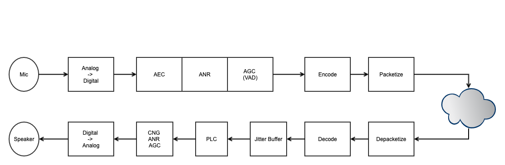

WebRTC 音频¶
目录
Abstract |
Web 音频 |
Authors |
Walter Fan |
Status |
WIP |
Updated |
2021-12-29 |
Overview¶

Audio Capture by OS framework
Audio data processing: AEC, ANR, AGC, etc.
Active Speaker Arbitration, Selection and Notification based on Audio Level
Audio data transimission
Audio mixer
PLC¶
一般方法¶
PLC(Packet Loss concealment): 包丢失隐藏，是一种在VOIP通信中最小化语音数据包丢失带来的影响的技术。目录的PLC主要有三种技术：
Zero insertion(插入零或者静音包)：丢失的语音帧使用0代替。这样虽然解决带来丢失的语音帧，但是带来的后果是通话的静音现象；
Waveform subsititution(波形替换)：丢失的语音帧使用已经接收到的语音进行替换（因为语音在比较短的时间内是相对固定的）。最简单的是使用上一次接收到的语音帧进行替换；
Model-based methods（基于模型的方法）：引入了一些算法，这些算法利用语音的内插和外插间隙的特性产生语音帧，取代丢失的语音帧；这种方法比较复杂。
处理算法¶
replace the packet by mute signal (not good)
repeat last packet
interpolate samples by last packet and next packet